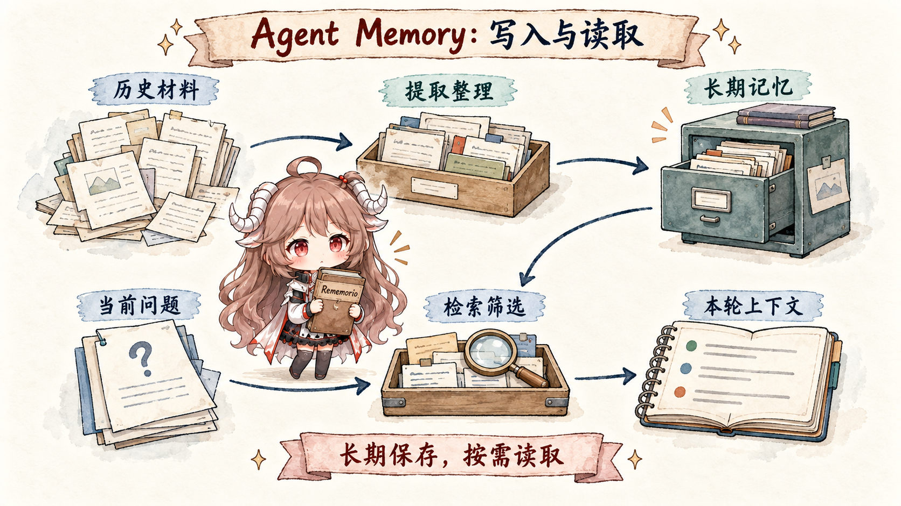

读 memory 项目，如果一开始就盯着 embedding、graph、BM25、RRF，很容易变成名词对名词。 更稳的读法，是跟着一次请求往下走：这条新消息会不会沉淀成长期事实；旧事实要不要被覆盖、保留还是降权； 哪些工具结果只属于当前任务；最后进入 prompt 的，是原文、摘要、实体关系，还是几条已经排好序的记忆。
这篇是系列入口。它先把“写入”和“召回”讲成一条能复盘的链路，再把 Mem0、Letta、 Graphiti、LangMem、TencentDB-Agent-Memory、Cognee、Supermemory 放到同一张地图里。这样后面读源码时，读者看到的就不是一堆孤立功能，而是每个系统把哪一段责任拿到自己手里。
阅读契约。 读完入口篇，应该能回答四件事：一条对话怎样先被提取成 memory record； 一次查询怎样经过召回、排序和压缩进入 model view；为什么分词、embedding、BM25、RRF、图遍历只是这条链路里的不同工具； 以及后面几篇分别把 memory 的哪段责任拿出来深挖。
证据边界。 本系列会以公开仓库、官方文档、论文和项目博客为准。入口篇只使用项目公开定位和 README 级别的材料做路线划分； 后续源码篇再进入具体数据结构、调用链、索引与检索逻辑。服务端托管产品的内部实现不可见时，会按公开 API 合约描述，不把推测写成源码事实。
一、从一次请求看起：memory 到底帮 Agent 做什么
假设一个 coding agent 连续陪你做三周项目。第一周你告诉它“这个仓库不要 mock 数据库”；第二周它从测试失败里学到 “账单模块依赖真实租户配置”；第三周你只问一句“继续修上次那个报销问题”。如果没有 memory，它只能重新翻聊天记录和工具输出； 如果把所有历史都塞进 prompt，上下文很快被日志和旧结论淹没。
长期记忆系统介入的位置就在这里：写入时把对话里的可复用事实变成 memory record， 读取时从 memory store 里挑出少量证据放回本轮上下文。 前者常被叫做 extraction、add、upsert 或 memory write；后者常被叫做 search、retrieve、recall 或 context assembly。

1.1 写入：从原始对话里提取可长期复用的事实
写入不是把整段聊天原封不动塞进数据库。一次对话里有闲聊、临时指令、工具输出、用户偏好、项目事实和时间线变化； memory 系统要先判断哪些内容以后还可能用得上，再把它变成更稳定的记录。把这条链路展开，通常会经过五步：
| 步骤 | 系统在判断什么 | 产物长什么样 |
|---|---|---|
| 观察 | 这轮输入、回复、工具结果里哪些内容值得检查。 | 一段 conversation / event / tool trace。 |
| 抽取 | 哪些句子以后还可能影响回答或行动。 | 几条 candidate memory，例如用户偏好、项目事实、约束。 |
| 归并 | 候选事实和旧记忆是重复、补充、冲突，还是新事实。 | ADD、UPDATE、NOOP，或只追加一条新记录并保留旧证据。 |
| 落库 | 这条事实归哪个 user、agent、workspace、project 或 entity。 | 带 source、scope、time、confidence、entity links 的 memory record。 |
| 建索引 | 以后应该通过关键词、语义、实体还是时间把它找回来。 | 关键词索引、向量、图边、metadata 字段。 |
分词和 embedding 在这条链路里更像基础设施。中文关键词检索需要分词，例如用 GSE 这类 tokenizer 把连续中文切成可索引的词； embedding 把文本转成向量，方便后面按语义召回相似旧记忆。它们常参与建索引、去重和相似记忆查找； “这句话值不值得长期保存”这个判断，还要看 LLM 抽取、规则、schema、时间字段和应用侧边界。 在一些系统里，LLM 会先抽 candidate memory，再用 embedding / vector search 找相似旧记忆做归并；在另一些系统里，抽取、索引和归并会被拆成异步任务。
放到源码里看会更直观。
以 Mem0 当前 OSS 代码为例，add()
先把 user_id、agent_id、run_id 变成存储 metadata 和查询 filters，
再把消息送进 _add_to_vector_store(..., infer)。默认 infer=True 时，
_add_to_vector_store()
会取最近消息、召回相似旧记忆，再让 LLM 做一次抽取。
processed_metadata, effective_filters = _build_filters_and_metadata(...)
vector_store_result = self._add_to_vector_store(
messages, processed_metadata, effective_filters, infer, prompt=prompt
)
last_messages = self.db.get_last_messages(session_scope, limit=10)
existing_results = self.vector_store.search(..., top_k=10, filters=search_filters)
response = self.llm.generate_response(...)这几行说明两件事：写入入口已经带着 scope，LLM 看到的是新消息、最近消息和一小批相似旧记忆， 不是整座 memory store。embedding / vector search 在这里承担“找相似旧记忆”的职责，LLM 才负责把候选事实写成新的 memory record。
1.2 召回：从记忆库里组装本轮 model view
召回面对的是相反的压力：memory store 可以越积越大，prompt 只能容纳很少一部分。用户问“继续修上次那个报销问题”时， 系统不能把三周历史全部拿出来，只能先限定范围，再用几路检索信号召回候选，最后按上下文预算压成 model view。
| 步骤 | 系统在做什么 | 为什么不能省 |
|---|---|---|
| 范围过滤 | 先按 user、agent、workspace、project、时间段或权限缩小搜索面。 | 防止把别的用户、别的项目或已经失效的事实带进来。 |
| 多路召回 | BM25 找精确词，vector search 找语义相近，entity / graph 找相关对象。 | 单一路径很容易漏掉“同义不同词”或“词相同但对象不同”的情况。 |
| 融合排序 | 用 RRF、reranker、时间衰减或业务权重合并候选。 | 候选多了以后，顺序本身就会影响模型注意到什么。 |
| 预算裁剪 | 只保留 top-k 或 token 预算内的一小批证据。 | 模型需要的是当前任务的工作集，不是完整记忆库。 |
| 组装上下文 | 把记忆记录改写成 prompt 能读的 bullet、引用、profile 或 tool result。 | memory record 的存储形态通常不适合直接塞给模型。 |
BM25、RRF、reranker、hybrid search 就是在这条链路里发挥作用。BM25 给关键词匹配打分； vector search 给语义相似度打分；RRF 可以按名次融合多路结果；reranker 会在候选集上做更精细的相关性判断。 它们共同服务于一个目标：memory store 可以很大，但 model view 必须小、准、和当前问题有关。
再看 Mem0 的召回路径。search()
先校验 top_k、threshold 和 filters，再调用
_search_vector_store()。
后者把 query 同时送进语义检索、关键词检索和实体增强，最后由 score_and_rank() 输出预算内结果。
query_lemmatized = lemmatize_for_bm25(query)
query_entities = extract_entities(query)
embeddings = self.embedding_model.embed(query, "search")
internal_limit = max(limit * 4, 60)
semantic_results = self.vector_store.search(..., top_k=internal_limit, filters=filters)
keyword_results = self.vector_store.keyword_search(..., top_k=internal_limit, filters=filters)
scored_results = score_and_rank(
semantic_results=candidates,
bm25_scores=bm25_scores,
entity_boosts=entity_boosts,
threshold=threshold,
top_k=limit,
)
这样讲，读者不用靠猜来判断“有没有 BM25、RRF 或 rerank”。这条 OSS 路径里能直接看到 BM25 侧的关键词分数、vector 侧的语义候选和 entity boost；
rerank 是 search() 外层的可选分支，RRF 不是这段路径里显式出现的融合步骤。
1.3 基础概念要放回链路里理解
很多概念单独看都像“检索技术”，放回写入和召回两条链路以后，位置就清楚了。下面这张表不是词汇表， 而是一张读源码时的定位表：看到某个机制，先判断它在帮系统保存事实、找候选、合并候选，还是控制最后进入模型的内容。
| 概念 | 在哪条链路里出现 | 读源码时看什么 |
|---|---|---|
| 分词 / GSE | 写入建索引，读取处理 query | 它通常服务关键词索引，不代表系统已经理解了事实。 |
| embedding | 写入建向量，读取做 vector search | 它负责语义相似度，常用来找相似旧记忆或候选证据。 |
| BM25 | 读取召回或排序 | 它偏字面匹配，适合项目名、函数名、专有名词这类精确线索。 |
| vector search | 读取召回或写入归并 | 它偏语义相似，适合“说法变了但意思接近”的线索。 |
| entity / graph | 写入抽实体，读取扩展关系 | 它让人、项目、地点、任务之间的连接参与检索。 |
| RRF / rerank | 读取排序 | 它决定候选进入模型前的先后顺序和去重结果。 |
| top-k / model view | 读取结束 | 它是最后一道预算边界，决定模型这一轮真正看见什么。 |
有了这层基础，再看后面的项目会清楚很多：有的项目把提取做得很强，有的项目把召回做得很强， 还有的项目真正特别的地方在于 ownership，比如历史、画像、关系、任务状态和模型可见上下文分别由谁负责。
二、用五个盒子看项目边界
回到前面的报销例子，agent 手里其实有五个盒子。第一个盒子装原始证据：消息、文件、事件、工具结果； 第二个盒子装稳定画像：用户偏好、团队习惯、项目约束；第三个盒子装关系：人、项目、文档、任务怎样连接； 第四个盒子装时间线：哪些事实以前成立、现在成立、未来计划；第五个盒子装 model view：这一轮 prompt 里真正出现的少量材料。
判断一个项目，不妨先看它把哪个盒子当主战场。Mem0 把写入、归并和召回放到应用与模型之间的一层 memory service； Letta 把 profile、tools、messages 和 agent state 绑在同一个有状态 agent 里；Graphiti 把实体、关系、episodes 和时间有效期组织成 temporal graph； LangMem/LangGraph 把记忆动作接进工作流运行时，区分 hot path 和 background path；TencentDB-Agent-Memory 先处理当前任务里的上下文卸载， 再沉淀 L0 到 L3 长期记忆；Cognee 与 Supermemory 更像把企业知识、连接器、文件处理和用户画像一起产品化。
三、七条路线：同样叫 memory，边界并不一样
Mem0 的公开定位是给 AI assistants 和 agents 提供 memory layer。它最适合作为系列第一篇： 写入、去重、实体链接、多信号检索、Temporal Reasoning、Memory Decay 都集中在“应用和模型之间的一层记忆服务”里。
Letta 的入口不是先问怎么搜，而是先问 agent state 怎样存在。README 里的 quickstart 直接从创建带 memory blocks 的 agent 开始， 这会把“长期记忆”推进到 persona、human profile、tools、messages 和 agent runtime 的共同边界里。系列第二篇已经展开这条线。
Graphiti 把事实、实体、关系和 episodes 组织成带时间有效期的 context graph。它关心的不只是能不能搜到一段文本， 而是事实什么时候成立、什么时候被替代、能不能追回来源。
LangMem 提供 memory tools、background manager，并和 LangGraph store 集成。它的看点在于记忆动作是否发生在 agent 当前推理路径里， 还是在后台整理；这个问题和 LangGraph 的 durable execution、long-running stateful workflow 放在一起更自然。
TencentDB-Agent-Memory 同时处理当前任务上下文和跨会话用户记忆。它把厚重工具日志卸载到 refs/jsonl/MMD 任务画布， 再用 L0 Conversation、L1 Atom、L2 Scenario、L3 Persona 做长期记忆。
Cognee 强调 ingest data、build self-hosted knowledge graph、vector embeddings、graph reasoning 和 ontology generation。 它更像把企业或个人知识库先变成一套可追踪、可检索、可连接的长期知识层。
Supermemory 把 memory、user profiles、hybrid search、connectors、file processing 放到同一套 context engine 里。 它放在系列最后讨论：当记忆从单个 agent 的内部机制扩展成产品化 API，哪些能力会被一起打包。
四、为什么第一篇先讲 Mem0
Mem0 很适合做第一篇，不只是因为它热度高，也因为它的算法演进足够清楚。早期 paper mem0 会让 LLM 对相似旧记忆做 ADD、UPDATE、DELETE、NOOP 判断；mem0g 再把实体和关系放进图结构；到 2026 年 4 月的新算法， 公开材料强调 single-pass ADD-only、entity linking、hybrid retrieval、Temporal Reasoning 和 Memory Decay。
这条线能帮读者建立一个基础问题：如果写入时修改旧记忆，系统能维持较小 memory set，但会把“是否过时”的判断压到写入阶段； 如果只追加写入，系统能保留历史变化，检索阶段就要承担更多排序、时间解释和去噪责任。理解这个取舍以后，再去看 Letta 的 agent state、 Graphiti 的 temporal graph、LangMem 的 hot path/background memory、TencentDB-Agent-Memory 的 Context Offload， 就不会把所有项目都看成“向量库外面包一层 SDK”。
已完成。 Mem0 记忆算法怎么演进 已经作为系列第一篇发布， 重点讲 paper mem0、mem0g、v3、Temporal Reasoning 和 Memory Decay。
五、这一组文章按什么顺序读
这一组文章不按项目热度排，而按“记忆归属从外到内、从文本到结构、从库到平台”的路线排。这样每一篇都能接住上一篇留下的问题， 而不是平铺罗列功能清单。
| 顺序 | 项目 | 主线问题 |
|---|---|---|
| 1 | Mem0 | 外置 memory layer 怎样从可更新记忆走向只追加写入与多信号检索。 |
| 2 | Letta / Letta Code | 当 agent state 成为核心抽象，memory block、persona、human profile 和工具调用怎样一起工作。 |
| 3 | Graphiti / Zep | 时间、来源和关系进入图以后，长期记忆怎样回答“以前”和“现在”这类问题。 |
| 4 | LangMem / LangGraph | 记忆动作在运行路径里发生，还是由后台 manager 整理，分别改变哪些工程边界。 |
| 5 | TencentDB Agent Memory | 当前任务里的工具日志怎样卸载成可恢复的符号结构，同时沉淀 L0 到 L3 长期记忆。 |
| 6 | Cognee / Supermemory | 当记忆扩展成知识层或 context API，检索、连接器、文件处理和用户画像怎样被打包。 |
六、选型时先问谁拥有历史
读完这些项目后，最可复用的判断不是“哪一个 benchmark 更高”，而是四个 ownership 问题： 原始历史由谁保存，长期画像由谁维护，关系和时间变化由谁解释，最后的 model view 由谁组装。 如果这些边界没有先定清楚，后面无论接多少 embedding、BM25、graph traversal 或 rerank，都很容易把问题推迟到 prompt 里。
这个系列会尽量沿着源码和公开合约往下读：先看入口 API，再看数据模型，再看写入和检索路径，最后回到工程取舍。 对读者来说，目标不是记住每个项目的宣传语，而是能在自己的 agent 里判断：这份记忆应该是证据、画像、关系、任务状态， 还是只属于当前这轮模型上下文。